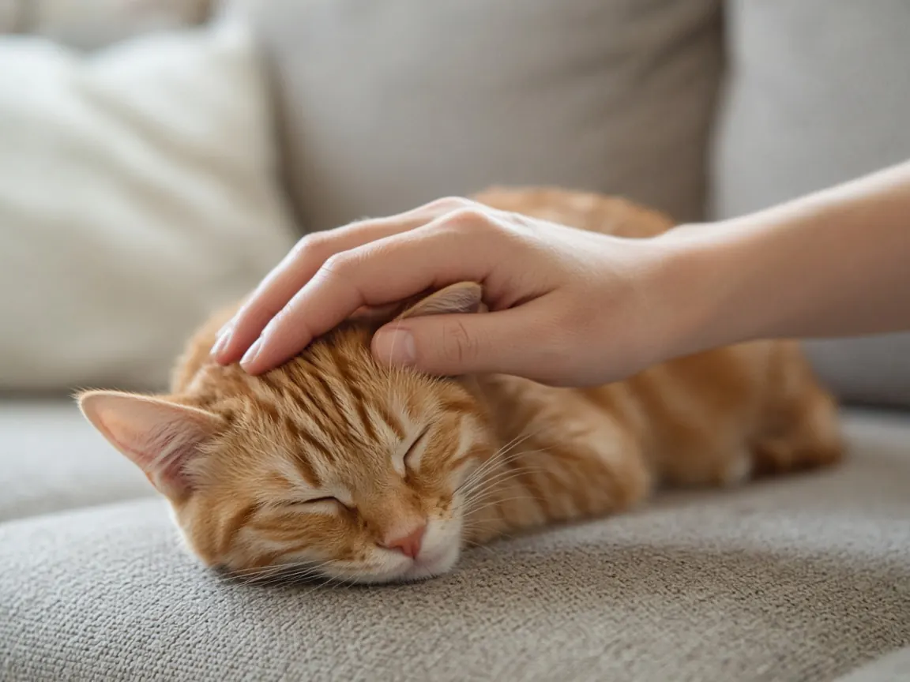

Why do cats headbutt you?
Cats headbutt you to leave their scent on you. Glands on the face release pheromones that people cannot smell, and rubbing them on you marks you as familiar and safe. Vets generally read it as a sign of trust.

Headbutting is about scent
VCA Animal Hospitals explains that cats have scent glands on the cheeks, forehead and chin, and around the mouth and ears. When a cat rubs or headbutts, which behavior specialists call bunting, those glands release pheromones. People cannot detect them, but other cats can.
PetMD adds that the pheromone placed during a headbutt comes from glands just in front of the ears.
What your cat is telling you
Veterinary sources describe several overlapping meanings. A cat that headbutts you is marking you with its scent, which makes you part of its familiar surroundings. VCA calls it a sign of trust: you now smell like your cat, and that is reassuring to the cat.
It can also be a greeting. PetMD notes that a cat may headbutt someone it does not know well to gather information about them.
Colony scent and bonding
Cats that live together rub against one another, and PetMD describes this as mixing their scents into a shared colony scent. Rubbing against you adds you to that group scent.
Why they do it again and again
PetMD points out that scent marks fade and need to be reapplied, so your cat may mark you again after you have been out. Cats may also headbutt a hand to ask for chin and head scratches.
How to respond
Let your cat finish the rub, and offer a finger or gentle scratch where cats usually like it, such as the cheeks and under the chin. Our guide to where cats like to be petted covers the favorite spots. If your cat's behavior changes suddenly, mention it to your vet.
Cat headbutting FAQ
Is a cat headbutt a sign of love?
It is better described as trust and bonding. The cat is putting its scent on you, which marks you as familiar and safe.
Why does my cat rub its face on furniture too?
Cats mark familiar objects with facial pheromones, which makes their surroundings smell safe and familiar.
What is bunting?
Bunting is the term for a cat rubbing or bumping its head against a person, object or another cat to deposit scent.
Should I headbutt my cat back?
There is no need. Gentle scratches on the cheeks or chin are a better reply. Always read your cat's body language and stop if it moves away.
Sources
Cite this page
Students and teachers are welcome to cite this page. Add your access date if your teacher or style guide asks for one.
APA (7th ed.)
MeowWise. (2026, November 11). Why do cats headbutt you? https://meowwise.com/blog/why-do-cats-headbutt-you.html
MLA (9th ed.)
“Why do cats headbutt you?” MeowWise, 11 Nov. 2026, meowwise.com/blog/why-do-cats-headbutt-you.html.
Chicago (bibliography)
MeowWise. “Why do cats headbutt you?” Last modified November 11, 2026. https://meowwise.com/blog/why-do-cats-headbutt-you.html.
General education, not veterinary advice. If you are worried about your cat, contact your veterinarian; in an emergency, go to the nearest emergency vet.